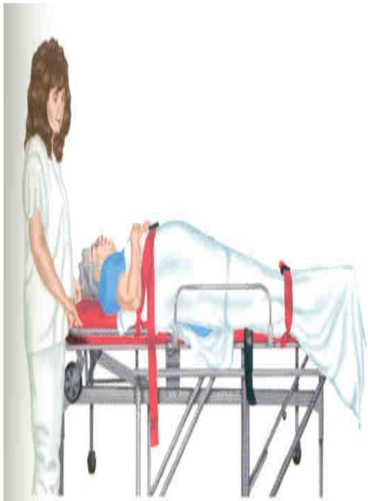

Body Mechanics, Mobility, and Patient Transfers
Body Mechanics in Bed Making
- Know limitations. Don't lift, turn, or move resident alone if in doubt
- Get close to side of bed, don't make from the top or bottom of the bed
- Back straight, knees bent, feet apart
- Move feet to turn in direction wanted & avoid twisting back
- Raise bed to comfortable height
- Make one side of bed before beginning other side
BODY MECHANICS AND MOBILITY
Body Mechanics: is the effort; coordinated, and safe use of the body to produce motion and maintain balance during activity.
Proper Body Mechanics
Use of safest and most efficient methods of moving and lifting is called body mechanics. This means applying mechanical principles of movements to the human body.
Basic Principles of Body Mechanics
- It is easier to pull, push, or roll an object than to lift it. The movement should be smooth and continuous, rather than jerky.
- Often less energy or force is required to keep an object moving than it is to start and stop it.
- It takes less effort to lift an object if the nurse works as close to it as possible. Use the strong leg and arm muscles as much as possible. Use back muscles, which are not as strong, as little as possible. Avoid reaching.
- The nurse rocks backward or forward on the feet and with his or her body as a force for pulling or pushing.
- Plan the move or transfer carefully. Free the surrounding area of obstacles and move the required equipment near the head or foot of the bed.
- Obtain assistance of other people or use mechanical devices
- Adjust the working area to waist level and keep the body close to the area, elevate adjustable beds.
- Always face the direction of the movement
- Start any body movement with proper alignment
- Before moving an object, increase stability by widening your stance and flexing your knees, hips and ankles.
- Avoid working against gravity. Push, pull, roll or turn objects instead of lifting them.
- Use your gluteal and leg muscles rather than sacrospinal muscles of the back to exert an upward thrust when lifting
- When pushing an object, enlarge the foot of support by moving the front foot forward.
- When moving objects, hold them as close as possible to your centre of gravity. The person's center of gravity located in the pelvic area.
Body Mechanics Safety Precautions
- Using specific methods to lift large weights without injury
Safety Precautions
- Use legs, not back to lift
- Largest bone/muscle group
- Keep weight close to body
- Shifts center of gravity to patient
- More leverage
LIFTING PATIENTS
Lifting Consideration
- Consider the weight of object/ patient.
- Communicate with partner.
- Identify the need for help before lifting.
- Have a plan
Guidelines for Safe Lifting
- Consider the weight of the patient together with the weight of the stretcher or other equipment being carried and determine if additional help is needed.
- Know your physical ability and limitations. Know your combined ability with your partner. If absolutely necessary, you can ask bystanders to help.
- Lift without twisting. Avoid any kind of swinging motion when lifting as well.
- Position your feet shoulder width apart with one foot slightly in front of the other.
- Communicate clearly and frequently with your partner. Decide ahead of time how you will move the patient and what verbal commands will be used. Also, tell the patient what you will be doing ahead of time. A startled patient may reach out or grab something and cause a loss of balance.
Guidelines for Carrying Patients
- Whenever possible, move patients on devices that can be rolled.
- Minimize the distance needed to carry patients
- Work in a coordinated manner with your partner.
- Keep the weight as close to your body as possible.
- Keep your back in a locked-in position and refrain from twisting.
- Flex at the hips, NOT the waist, and bend at the knees.
- Do not hyperextend your back (do not lean back from the waist).
- Try to lift with a partner that has similar height and strength.
Steps of Proper Lifting
- Let your legs do the work
Pick the object up, from between your knees. Keep the load close to your body and then stand up, using your leg muscles. Keep your back as straight as possible and tighten your abdominal muscles as you rise from the floor
- Avoid twisting
When you're standing and ready to move, hold the load close to your body to lessen the strain on your lower back. Avoid turning or twisting while holding the load. Turn by pivoting your feet, not your back. Avoid lifting heavy loads above your waist
Equipment for Moving Patients
Wheeled Stretcher
Stretchers are usually adjustable to different heights and different angles. Some can be adjusted to elevate the legs (Trendelenberg position). Additional equipment may be attached to the stretchers including oxygen, IV lines, and cardiac monitors or defibrillators.
Guidelines for transferring a patient by stretcher:
- Push the stretcher with the patient's feet forward.
- Pull it head-first into elevators.
- Pull it feet-first down ramps.
- Never leave a patient on a stretcher unattended.
Safety Measures with Wheelchairs

Transferring a Patient Between Chair and Bed
Your patients may need to be transferred between the bed and a chair or wheelchair. Remember the following points:
- The patient should wear footwear with nonskid soles to avoid slipping.
- Always get help if the patient is unable to assist or is very heavy. Encourage the patient to help, however, whenever possible.
- If you are moving a patient to a vinyl-covered chair, cover the seat and back with a bath blanket. This will make the patient more comfortable by absorbing perspiration. Placing a pillow on the seat will serve the same purpose.
- Determine if the patient has a weaker side. If so, allow the patient to lead with the strong side. Make sure the patient can see the chair or bed that you are transferring to.
- DO NOT ALLOW THE PERSON TO PUT HIS ARMS AROUND YOUR NECK
- MAKE SURE YOU LOCK THE WHEELS ON THE BED AND WHEELCHAIR
Assisting the Patient to Transfer

Proper Positioning of the Patient in a Chair
The patient should sit up straight.
The backs of their knees should be slightly away from the seat of the chair.
Their feet should either rest on the floor or on a stool.

Their lower back should rest against the back of the chair.
Wheelchairs: Safety Tips
- Make sure the chair is locked when removing or seating the person.
- Pull the wheelchair backwards up steps or curbs.
- Adjust the height of the foot pedals so the person is sitting at a 90 degree angle at the hip and knee.
Modes of Lifting Patients
- Through arm wrist crossed over grip
- Thumb through grip
- Shoulder blade grip
Assisting a Patient to Move Up in Bed
If the patient can assist:
Have the patient grasp the headboard and bend their knees.
Place your forearms under their shoulders and knees.
Lift at the count of three.

If the patient has a trapeze on the bed:
Have the patient grasp the trapeze and bend at the knees.

Using a Lift Sheet
A lift sheet makes lifting easier.
Helps prevent friction against the patient's skin.
Takes two workers to lift.
If patient can help, have them bend their knees.
Use for persons who cannot help with the move.

Patient Mobility
Assistive Devices
Clients who are unable to ambulate independently can use devices designed to help them walk safely.
Determination of which device to use is based on:
- Upper arm strength
- Endurance (stamina)
- Presence or absence of one-sided weakness
- Weight-bearing ability
TURNING PATIENTS
Reasons for Turning Frequently
- Provides exercise for muscles
- Stimulates circulation
- Helps prevent decubitus ulcers and contractures
- Provides comfort to the patient
General Principles for Turning the Adult Patient
- Sometimes the physician will specify how often to turn a patient.
- A schedule can be set up for turning the adult patient throughout their "awake" hours.
- The patient should be rotated through four positions (unless a particular position is contraindicated).
- Record the position change each time to ensure that all positions are used.
One example of a schedule for turning would be:
- 10 a.m Prone position
- 12 p.m. Left Sim's position
- 2 p.m Supine position
- 4 p.m. Right Sim's position
- 6 p.m. Prone position
Certain conditions may make it impossible to turn the patient.
- Turning may be impossible if the patient has fractures that require traction appliances.
- Turning may be harmful to patients with spinal injuries.
In these cases, you need to rub the back by lifting the patient slightly off the bed and massaging with your hand held flat.
Logrolling
- Logrolling is a technique used to turn a patient whose body must at all times be kept in a straight alignment (like a log).
- This technique is used for the patient who has a spinal injury.
- Logrolling is used for the patient who must be turned in one movement, without twisting.
- Logrolling requires two people, or if the patient is large, three people.

Logrolling Technique
- Wash your hands.
- Approach and identify the patient (by checking the identification band) and explain the procedure (using simple terms and pointing out the benefits).
- Provide privacy.
- Position the bed.
- The bed should be in the flat position at a comfortable working height.
- Lower the side rail on the side of the body at which you are working. Position yourself with your feet apart and your knees flexed close to the side of the bed.
- Fold the patient's arms across their chest.
- Place your arms under the patient so that a major portion of the patient's weight is centered between your arms. The arm of one nurse should support the patient's head and neck.
- On the count of three, move the patient to the side of the bed, rocking backward on your heels and keeping the patient's body in correct alignment.
- Raise the side rail on that side of the bed.
- Move to the other side of the bed.
- Place a pillow under the patient's head and another between their legs.
- Position the patient's near arm toward you.
- Grasp the far side of the patient's body with your hands evenly distributed from the shoulder to the thigh.
- On the count of three, roll the patient to a lateral position, rocking backward onto your heels.
- Place pillows in front of and behind the patient's trunk to support their alignment in the lateral position.
- Provide for the patient's comfort and safety.
- Position the call bell.
- Place personal items within reach.
- Be sure the side rails are up and secure.
- Report and record as appropriate.
TRANSFERS AND MECHANICAL LIFTS
Transfers
- Patients transferred to wheelchairs, chairs, and stretchers
- Correct procedures must be followed to prevent injury to both patient and worker
Mechanical Lifts
- Frequently used to transfer weak or paralyzed patients
- Check straps, clasps, and sling for any defects
- Use smooth even movements while operating lift
- Reassure frightened patients that lift is safe
- Move unnecessary furniture out of the way during transfers
- Particularly important in home care situations